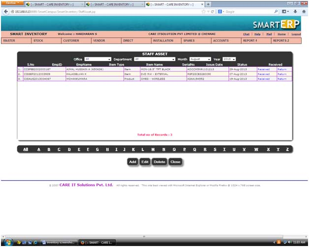
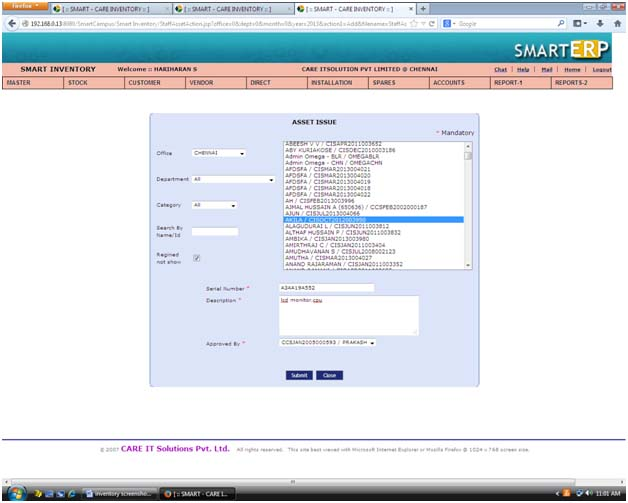
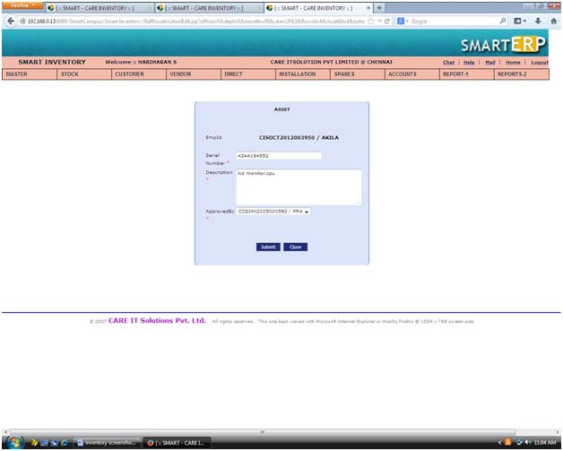
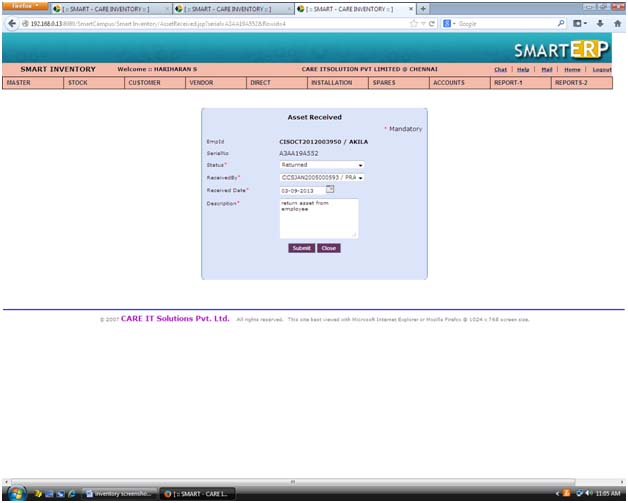

|
||
Staff Asset |
||
| This is Staff asset view screen. We can add, edit and delete the staff asset. | ||
| To add a new Staff asset by click the add button | ||
| To edit Staff asset by click the edit button | ||
| To delete Staff asset by click the delete button. | ||
| To filter Staff asset by using alphabetic filter, office, department, month and year. | ||
|  | ||
Add page : |
||
| To add a staff asset by click the add button in staff asset view screen. | ||
| Click the Add button in staff asset view screen | ||
| Select staff name. | ||
| Enter the serial number, description | ||
| Select approved by. | ||
| The * mark symbol are mandatory. | ||
| The * mark field validate when click the add button. | ||
| Click the submit button. | ||
| The staff asset successfully added. | ||
|  | ||
Edit page : |
||
| Edit or change staff asset. | ||
| Choose or tick the check box for staff asset in view screen | ||
| Click the Edit button in staff asset view screen | ||
| modify the serial number,description. | ||
| Change approved by. | ||
| Click submit button. | ||
| Staff asset successfully update. | ||
|  | ||
Not return : |
||
| To return the staff asset by using not return link in staff asset view screen. | ||
| The control is transfer to asset received page. | ||
| Select status,received by,received date. | ||
| Enter the description | ||
| Click submit button. | ||
| Staff return their’s asset so not return change to return in staff asset view page. | ||
|  |